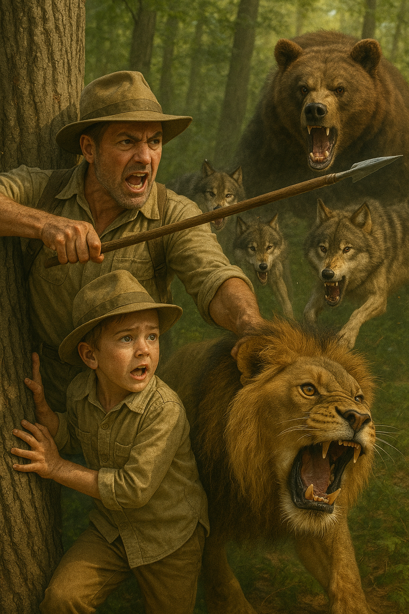

Chapter 1: The Rise of the Jungle King

In the heart of the wildest jungle, lived an 8-year-old boy named Charols. He wasn’t like other boys—he was the son of the world’s greatest explorer.
At a rugged campsite, young Charols followed his tall, bearded father through thick vines.
Charols: “Dad! What’s that sound?”
Father (smiling): “That, my boy, is the call of a lion. Come on, let’s explore.”
Together they faced wild animals: a roaring lion, charging wolves, and a growling bear. Charols learned survival, combat, and respect for the jungle from his father.
Under a full moon, baby Charols was blessed by his parents with the spirit of the lion—a glowing lion-shaped symbol appearing on his hand, marking his destiny.
Chapter 2: The Last Defender

On Charols' 18th birthday, a sudden thunderstorm struck. A blast of golden light hit him, awakening incredible powers: flight, enhanced vision, and control over water.
His friends cheered, but Charols was shocked, floating above the ground with glowing eyes.
He had become the Jungle King, protector of the wild.
But at age 21, power twisted his heart. Dark armor replaced his jungle gear, and a red sky loomed over a dark castle as Charols vowed revenge on a world that had taken everything from him.

He destroyed planets and commanded beasts of the galaxy, becoming feared as a universe destroyer.
Yet, in a quiet moment, he remembered his 8-year-old self’s promise to protect the jungle.
Chapter 3: Redemption

In a stormy battlefield, Solarian, a hero born from a dying star, confronted Charols to save Earth.
Their epic battle shook the skies, with powers clashing in floods, beams, and roaring spirit-lions.
Mid-battle, Solarian showed Charols memories of his parents reminding him that his strength was meant to protect, not destroy.
Humbled and conflicted, Charols fell to his knees, begging for mercy and vowing to fix the damage.
Solarian extended his hand, and Charols rose anew as a hero.
Together, they healed the jungle and rebuilt cities, forming a new team to protect Earth.
Their emblem, a lion merged with a sun, shone bright as a symbol of mercy and hope.

Chapter 4: Across the Lionverse
After balancing the world, Charols shattered the timeline, causing the multiverse to unravel.
The mysterious Weaver watched as alternate versions of Charols emerged — future, beast, queen, and cyber versions, each from their own Earth.
Together with Solarian, they faced the Omega Charols — a godlike villain who consumed realities to remake the universe in his dark image.
The multiversal Lionforce united in a fierce battle across realities.
In the climax, main Charols used the Lionheart Core to channel the flame from all versions of himself, embracing Omega Charols in a hug of light.
The Lionverse reset, leaving one Earth and one Charols — peaceful and ready to continue the roar.